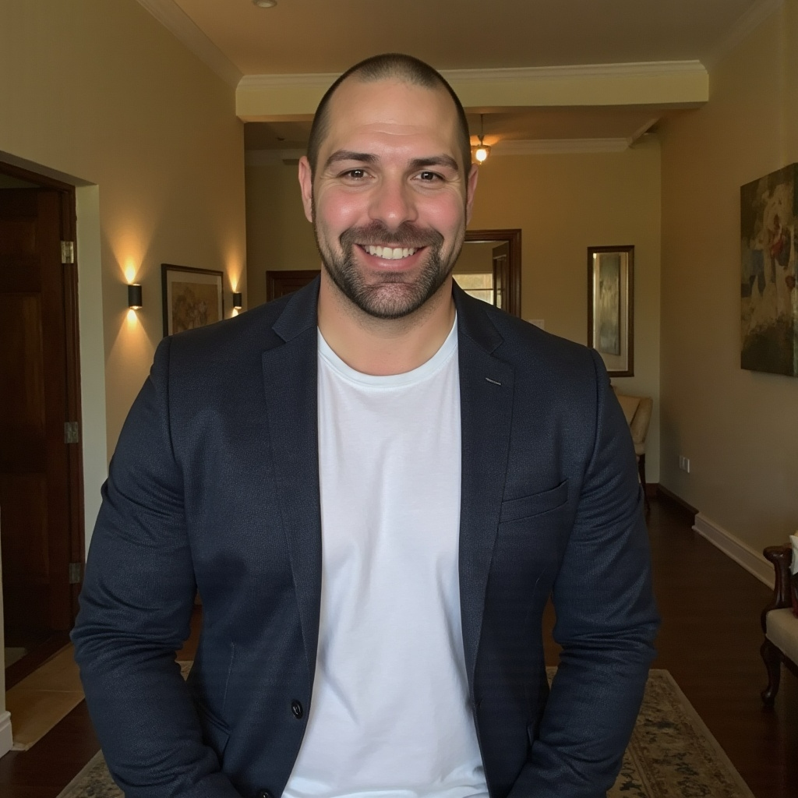

About
Operator. Investor. Director.
Two decades at the intersection of technology, infrastructure, and capital in Australia's most demanding industries.

"I have spent two decades at the intersection of technology, infrastructure and capital — leading businesses, managing teams, and navigating complexity across some of Australia's most demanding operating environments."
My career began in ICT services and has evolved through operating leadership of increasing scale and scope. I have held Managing Director, General Manager, and Director roles across technology services, network infrastructure, and digital transformation — always with a focus on commercial outcomes, client relationships, and long-term value creation.
The thread connecting my career is a focus on capital-intensive, complex industries — mining, oil and gas, and telecommunications. I understand what it takes to deliver technology and communications infrastructure in remote and hostile environments, and I understand the governance and risk disciplines that underpin sustainable performance in those settings.
In parallel with my operating career, I have developed a disciplined investment practice focused on infrastructure, digital assets and energy transition themes. I bring the same analytical rigour I apply to operating decisions to capital allocation — patient, thesis-driven, and grounded in first-principles understanding of the assets I invest in.
I hold the AICD Company Directors Course qualification (August 2023) and serve as a non-executive director. I am based in Perth, Western Australia, and have operated with national and global mandates throughout my career.
Career timeline
Roles that shaped the perspective
Director — Private and Public Networks
National mandate leading the Private Networks and Public Networks business units at BAI Communications, one of Australia's leading independent wireless infrastructure providers. Responsibility for P&L, strategy, go-to-market, and client relationships across government, resources, and major public venue sectors. Focus on critical communications, private 4G/5G, and network-as-a-service delivery at scale.
Non-Executive Director
Board director of Vitalis Solutions, a specialist technology and consulting business. Contributing governance, strategy, and growth perspectives across board-level decisions on capital, risk, and commercial direction.
Managing Director
Led strategic planning, business development, financial management, team leadership, client relations, risk management, and continuous improvement. Committed to driving sustainable growth, fostering innovation, and ensuring operational excellence across the ICT landscape. Served major resources, government, and enterprise clients nationally.
Global Client Executive
Led a global team delivering service excellence, transformational technology, and advisory services to a diversified mining leader. Direct engagement with C-suite and board-level stakeholders. Part of a five-year, four-month tenure across multiple senior roles at DXC.
Resources Industry Account General Manager
Australian client coverage responsibility for an Oil and Gas super major. Managed large-scale technology outsourcing and transformation programmes for resources clients in demanding operational environments.
Mining and Energy Industry Lead — ANZ
Shaped and drove CSC's go-to-market strategy in the Mining and Energy sector. Led a national sales coverage team of eight Account General Managers and Business Development Executives focused on the resources vertical across Australia.
National Mining, Oil and Gas Sales Manager
Led a national Mining, Oil and Gas vertical sales team delivering ICT, communications, and managed service solutions to a growing resources sector client base. Built on strong WA market growth over the prior four years to drive a nationally focused vertical sales strategy.
WA State Manager
Grew the WA business for UXC Connect, building key partnerships with Tier 1 mining, oil and gas organisations and government departments. Delivered critical IT infrastructure, managed services, and village entertainment solutions across WA.
WA State Manager
Grew Integ's WA revenue by over 480% in five years, building the team into a partner of choice for Rio Tinto, Chevron, iiNet, and Fortescue Metals Group. Moved into this role following Integ's acquisition of Icon Communications in 2006.
Communications Manager
Overall management and growth of a small ICT business unit from startup through to business sale — the foundation of 24 years of industry experience across resources, telecommunications, and digital infrastructure.
Approach
How I work
Execution-first
Strategy only counts when it translates to outcomes. I have spent my career closing the gap between intent and delivery in complex, capital-intensive environments.
Long-term lens
Whether operating or investing, I am interested in durable assets and compounding advantages — not short-cycle returns. I think in years and decades, not quarters.
People and governance
The best outcomes come from clear governance, strong teams, and honest conversations. I value directness, accountability, and the kind of board culture that enables good decisions under pressure.